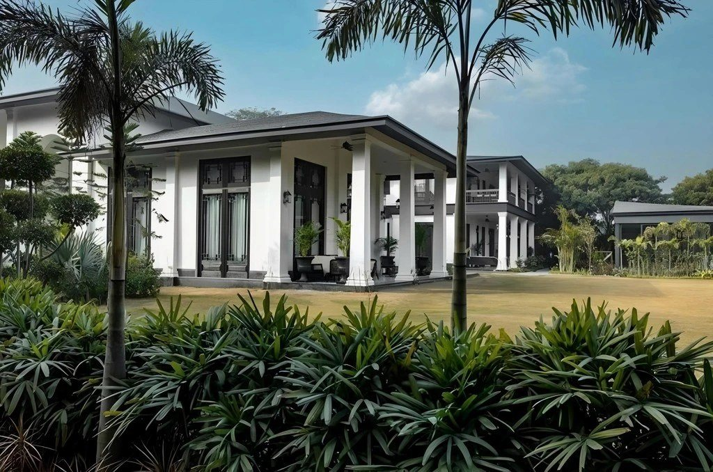
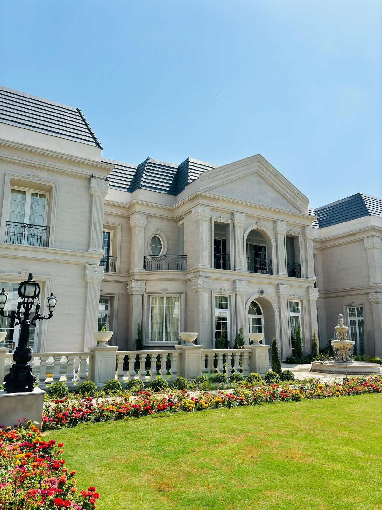
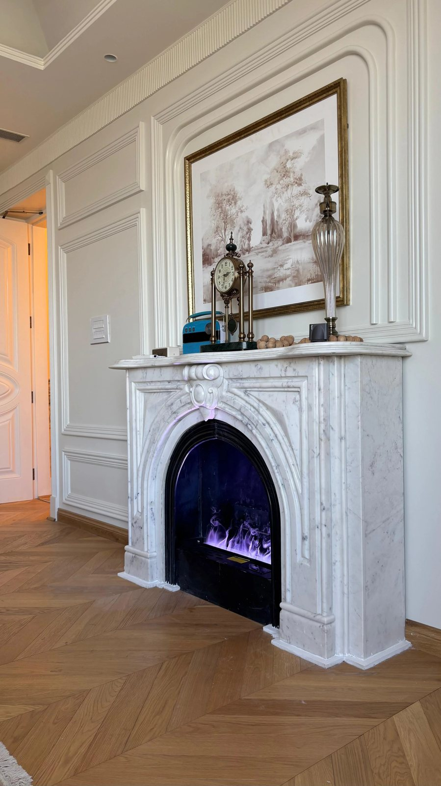

About the Work
A case study shaped around legacy, craft and premium enquiry
JB Marble Decor already communicates elegance through marble. Our role was to translate that feeling into a digital case-study experience: warm, premium, image-led, and easy for architects, interior designers, homeowners, and luxury-space clients to understand.
The structure highlights heritage, service clarity, project scale, product categories, and enquiry intent — without making the page feel like a normal product catalogue.
What We Worked On
-
We framed the brand around heritage, craftsmanship, and luxury marble decor so the communication felt premium, credible, and rooted in legacy.

-
We planned a smooth page flow from introduction to services, projects, products, and enquiry so visitors could understand the brand quickly.

-
We arranged the offering into clear categories like fireplaces, fountains, planters, stone furniture, wall panels, pooja rooms, and artifacts.

-
We gave the portfolio a stronger editorial structure so high-value projects could feel aspirational, detailed, and easy to scan.

-
We used large-scale imagery, warm spacing, and luxury-led visual placement to let the marble work feel detailed and architectural.

-
We kept the journey enquiry-focused with clear contact moments, project confidence, and service clarity for high-intent visitors.